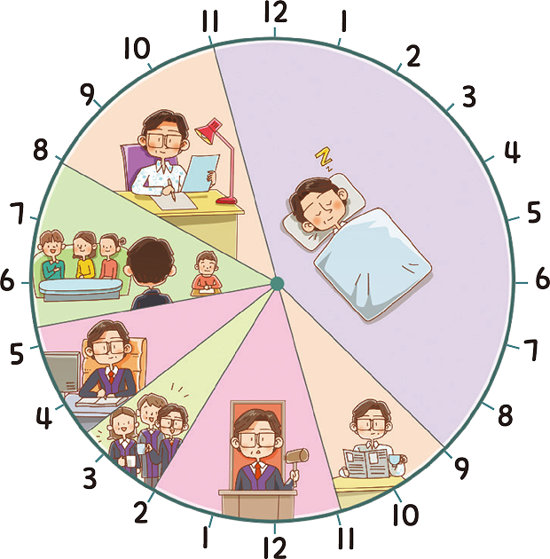

활동하기 이반 일리치의 죽음
 이반 일리치는 아침 아홉 시에 일어나 커피를 마시고 신문을 보다가 법원으로 출근했다. 그는 도착하자마자 일에 몰두하다가 휴식 시간에는 차를 마시며 동료들과 소소한 이야기를 나누었다. 손님이 없을 때는 사람들 입에 한창 오르내리는 책을 읽기도 했다. 집에 돌아오면 아내와 딸은 외출하 여 없거나 손님을 맞이하고 있었으며, 학생인 아들은 학교에서 배운 것을 복습하고 있었다. 그리고 그는 저녁에 서류를 읽으며 회사 일을 다시 시작하였다. 모든 일이 문제없이 돌아갔다. 그는 이러한 자신의 삶이 그리 지겹진 않았지만 그렇다고 즐겁지도 않았다.
- 레프 톨스토이, 『이반 일리치의 죽음』